source(here::here("r", "my_functions.R"))Spatial position and adjustment
Under construction.
This page is a work in progress and may contain areas that need more detail or that required syntactical, grammatical, and typographical changes. If you find some part requiring some editing, please let me know so I can fix it for you.
Overview
This module focuses on understanding the spatial position and adjusting how geoms position the data. We have seen how data are plotted in particular locations in plotting space based on the default behavior of the plotting functions. In many instances, the default is position = "identity" whether that identity represents what you see in the data frame or what is returned based on the statistical transformation of the data performed by the function.
This module demonstrates some ways to change the position for instances when you want to display data that otherwise take the same position or when you wish to unstack data for functions whose default is position = "stack". We will address this this for both point plots and bar plots, particularly related to concepts of jitter and dodge.
To Do
Readings
Reading should take place in two parts:
- Prior to class, the goal should be to familiarize yourself and bring questions to class. The readings from TFDV are conceptual and should facilitate readings from EGDA for code implementation.
- After class, the goal of reading should be to understand and implement code functions as well as support your understanding and help your troubleshooting of problems.
Before Class: First, read to familiarize yourself with the concepts rather than master them. Understand why one would want to visualize data in a particular way and also understand some of the functionality of {ggplot2}. I will assume that you attend class with some level of basic understanding of concepts.
Class: In class, some functions and concepts will be introduced and we will practice implementing {ggplot2} code. On occasion, there will be an assessment involving code identification, correction, explanation, etc. of concepts addressed in previous modules and perhaps some conceptual elements from this week’s readings.
After Class: After having some hands-on experience with coding in class, homework assignments will involve writing your own code to address some problem. These problems will be more complex, will involving problem solving, and may be open ended. This is where the second pass at reading with come in for you to reference when writing your code. The module content presented below is designed to offer you some assistance working through various coding problems but may not always suffice as a replacement for the readings from Wickham, Navarro, & Pedersen (under revision). ggplot2: Elegant Graphics for Data Analysis (3e).
External Functions
Provided in class:
view_html(): for viewing data frames in html format, from /r/my_functions.R
You can use this in your own workspace but I am having a challenge rendering this of the website, so I’ll default to print() on occasion.
Libraries
- {dplyr} 1.1.2: for selecting, filtering, and mutating
- {magrittr} 2.0.3: for code clarity and piping data frame objects
- {ggplot2} 3.4.3: for plotting
Load libraries
library(dplyr)
library(magrittr)
library(ggplot2)Loading Data
For this exercise, we will use some data from a 2023 CMS swim meet located at: “https://github.com/slicesofdata/dataviz23/raw/main/data/swim/cleaned-2023-CMS-Invite.csv”.
SWIM <- readr::read_csv("https://github.com/slicesofdata/dataviz23/raw/main/data/swim/cleaned-2023-CMS-Invite.csv",
show_col_types = F)Point Position in geom_point()
geom_point(
mapping = NULL,
data = NULL,
stat = "identity",
position = "identity",
...,
na.rm = FALSE,
show.legend = NA,
inherit.aes = TRUE
)What you see in the data is what you get in the plot. When using geom_point(), the position of the data is position = "identity" and the statistical transformation is stat = "identity", which is really no transformation at all. The result is a point for each xy pair in the data set.
As an example:
SWIM %>%
ggplot(., aes(x = Distance, y = Time)) +
geom_point()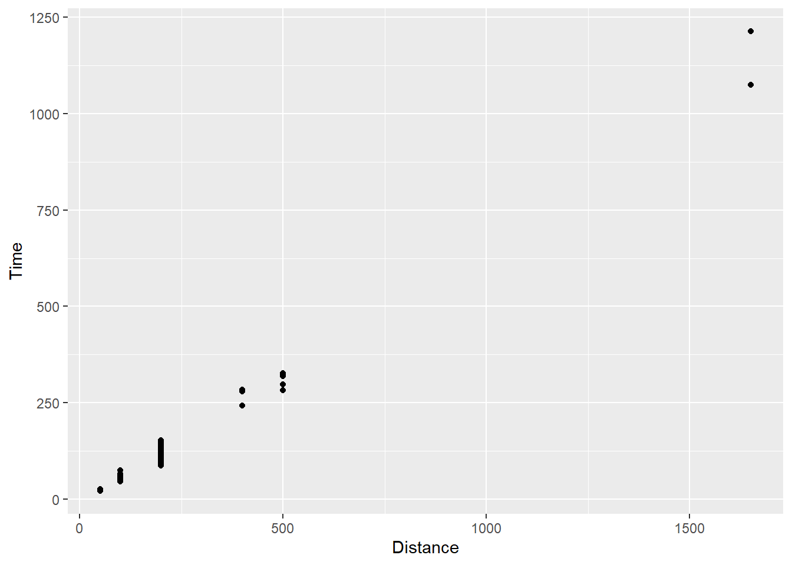
For all data, there is a point presented on the plot in the x and y locations corresponding to the identity of the data as you see them in the data frame. Go ahead and count the points and compare to the data frame. OK, I am just joking. The data set contains multiple individuals taking the same x position on the plot, specifically for each distance event in which they participated. If the identity of their data points corresponding to the y axis is also shared, the points will take the exact same xy position on the plot. To the extent that any differences in identity values are negligible given the constraints of the plot size, their data will also share the same position or two positions that are perceptually indistinguishable.
Also, as a side note, when people participate in multiple events and they contribute to more than one row of data in a data frame. Although the visualization would be accurate given the data, the model applied may be problematic if it assumes characteristics of data like independence. This course, however, is not about statistical modeling nor establishes a rule set for assumptions of models so you will have to learn how to do that elsewhere.
Addressing Overplotting: Making overlapping points visible
When points are plotted on some coordinate system, they need to take some spatial position as we have seen in the plots already created. When the identity value of two or more points are the same, however, those points will take the same spatial position on the data visualization. This problem is referred to generally as overplotting - points are plotted over top of each other.
There may be some advantages of this occurrence but there are severe drawbacks as well. On one hand, the date-to-ink ratio is reduced because the same ink is used to represent more than a single point. On the other hand, the individual points, which represent scores or values from different people, places, things, or events, are not visible in the data visualization. The visualization has clearly failed in communicating the data visually, the main purpose of the graphic. Even those with superior graphical-literacy skills lack the ability to see two points taking the same xy coordinate position in two-dimensional space.
When the plot lacks the ability to communicate all of the data, perception of, interpretation of, memory for, and decisions made from the data visualization will be biased.
point x y
A 2 3
B 2 3
C 6 2A visualization depicting the data for the 3 points above will misrepresent the data and lead the audience to estimate average performance along both x and y axes incorrectly. Whereas the mean along the x axis would likely be decoded as a value of 4 based on the two visible points, the true mean is 3.3333333 when accounting for all data points.
ggplot(DATA,
aes(x, y)) +
geom_point() +
xlim(0, 7) +
ylim(0, 7)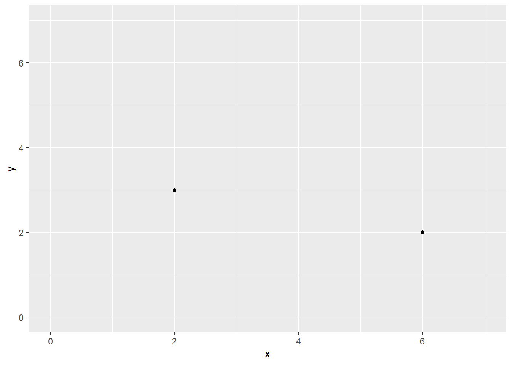
The goal then is to ameliorate this problem. We will address how to modify plots containing this issue in two ways.
First, we can adjust the spatial position of the points along x, y, or both so that the position does not match the data identity. This approach, of, course means that spatial positions of the data visualized do not map directly onto the data identity. This approach presents its own biasing problem, which increased as a function to the point displacement.
Second, we can adjust the opacity of the points in the plot. By default points using
geom_point()will be opaque. Making points more transparent will allow the user to see visibly points that share a spatial position, to the extent anyway that the cumulative degree of transparency of n points is distinguishable. Thus, the creator should be mindful of the degree of overlapping points no longer being distinguishable by changing their transparency.Third, we can create a counts chart or counts plot for which we can adjust the size of the points based on the frequency or the count of instances taking that position.
We could also plot all points with different shapes or so that overlapping points could be identified but this introduces a problem associated with using more than one visual element (e.g., position and shape) to communicate a single piece of information. This approach is also problematic for attention and the visual system. One might also consider changing point color but when two or more colors (e.g., red and yellow; or red and green) combine to become a new color, the plot cannot utilize that color (e.g., orange; yellow) for other points and the audience user does not know what colors combined to create them.
As a general but imperfect solution, we can modify both point transparency and position to address overplotting using {ggplot2}.
Default Point Position
We will use the SWIM data from 2023 to manipulate point position. To illustrate the effect best, we will also trim out some long times/events.
First, we should remind ourselves that the default setting for points plotting using geom_point() is the “identity” for the x and y mappings.
The default position argument is position = "identity":*
SWIM %>%
filter(.,
!is.na(Name),
Time < 1000
) %>%
ggplot(., aes(x = Distance, y = Time)) +
geom_point(position = "identity")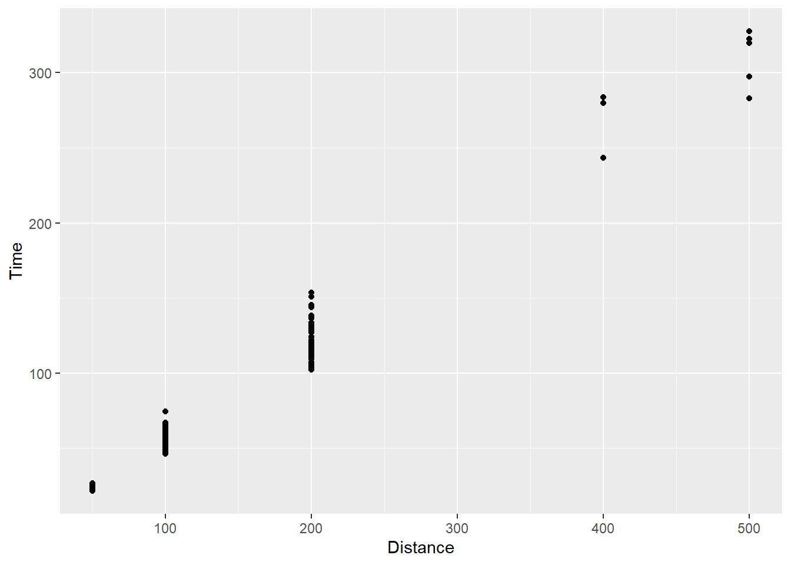
Adjusting Point Position
There are two main ways of adjusting the spatial position for point plots. One solution is to adjust the position argument within geom_point() and the other is to use a sister function geom_jitter(). However, you adjust your data, you must acknowledge that you are the creator of the graphic and that are are making the decision to change those point positioning. The adjustment will influence how users perceive, attend to, and interpret the visualization you produce and distribute. You must consider the degree of the adjustment and weigh the costs and benefits of “massaging” the data visualized. You also much assume responsibility and accountability for doing so.
geom_point(position = "jitter")geom_jitter()
Changing the position argument of geom_point()
Using gome_point(), we can pass position = "jitter" instead of position = "identity":
SWIM %>%
filter(.,
!is.na(Name),
Time < 1000
) %>%
ggplot(., aes(x = Distance, y = Time)) +
geom_point(position = "jitter")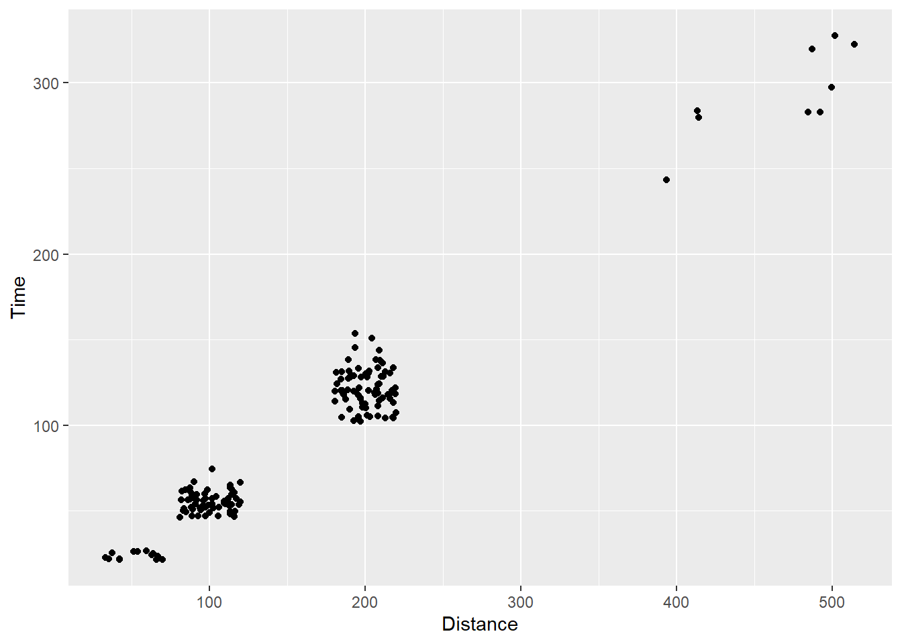
Using geom_jitter()
We can use geom_jitter() to jitter the points for us. The default argument for position adjustment in this function is position = "jitter". For more details, you can read the documentation of geom_jitter().
Using geom_jitter() rather than geom_point():
SWIM %>%
filter(.,
!is.na(Name),
Time < 1000
) %>%
ggplot(., aes(x = Distance, y = Time)) +
geom_jitter()Customizing jitter spread
Given position = "jitter" applies a stochastic function to reposition points along both x and y axes, one should not be surprised that to see functions contain arguments allowing for more control over movement along each axis (e.g., height and width).
In general, smaller values passed to these arguments will result in less dispersion of the points from their original positions. For both arguments, a jittering of points is applied in both positive and negative directions, so the total spread is twice the value specified in the argument. For example, passing width = 1 will jitter points having an “identity” position of x along that x axis, ranging from x - 1 to x + 1. You should also be mindful of the scales because an adjustment of 1 on some scales will be minimal and an adjustment of .3 on other scales may be quite dramatic. For example, on these scales, you really wont perceive much change if you used .3.
SWIM %>%
filter(.,
!is.na(Name),
Time < 1000
) %>%
ggplot(., aes(x = Distance, y = Time)) +
geom_jitter(height = 5,
width = 10
)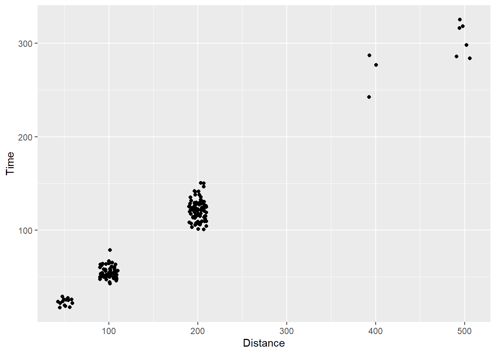
Despite setting these arguments to values, keep in mind that they do not control all points in exactly the same manner each time. The function still has some random component to it, so you will not be able to reproduce the plot with any consistency. We will address the topic of plot replication versus reproduction later.
Changing the position of a categorical variable
Another limitation that you see in this example is the limited movement of the points. They are fairly locked along the Distance variable. Part of the reason is that these values are discrete, or categorical rather than continuous so the movement is very constrained relative to what you might normally see in a numeric by numeric scatterplot.
Let’s change Distance to a character (e.g,. is.character()) or a factor (e.g., factor(), as.factor(), etc.) on the fly inside ggplot():
SWIM %>%
filter(.,
!is.na(Name),
Time < 1000
) %>%
ggplot(., aes(x = factor(Distance), y = Time)) +
geom_point()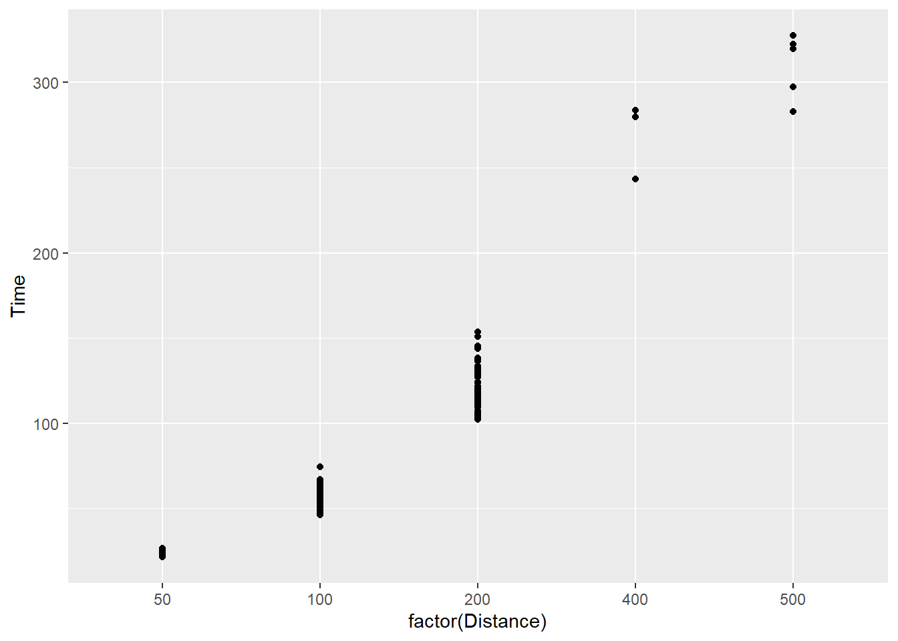
You will immediately notice that the x axis has changed. Disregard the label change as that is a simple fix with xlab("Distance") and is irrelevant to this current discussion. Importantly, factorizing the variable will make visible all levels of the factor variable present in the data. For example, you now see 50 which was not displayed before. This outcome illustrates the difference in default scale_*() functions for numeric and categorical data but we will address scale manipulations later. You will also notice that the interval between factor levels is equivalent along the x axis despite them not being numerically equal by nature. That behavior is a trade off by default which you can fix should you consider the perceptual implications of this approach problematic.
The main point here is to illustrate position manipulation. Let’s use geom_jitter() for comparison.
SWIM %>%
filter(.,
!is.na(Name),
Time < 1000
) %>%
ggplot(., aes(x = factor(Distance), y = Time)) +
geom_jitter() 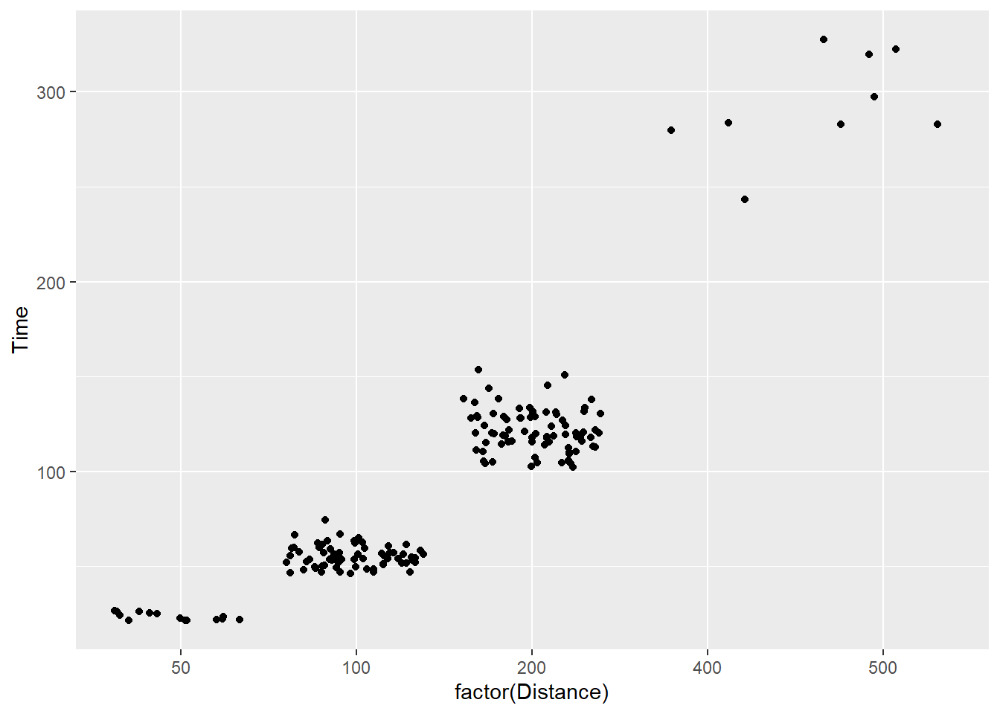
By default, you see sufficient movement in points, which may be too much or too little jitter depending on the data. We can adjust the height and width of the jitter here too but notice the value change when the variable is a factor.
SWIM %>%
filter(.,
!is.na(Name),
Time < 1000
) %>%
ggplot(., aes(x = factor(Distance), y = Time)) +
geom_jitter(width = 2,
height = 0
)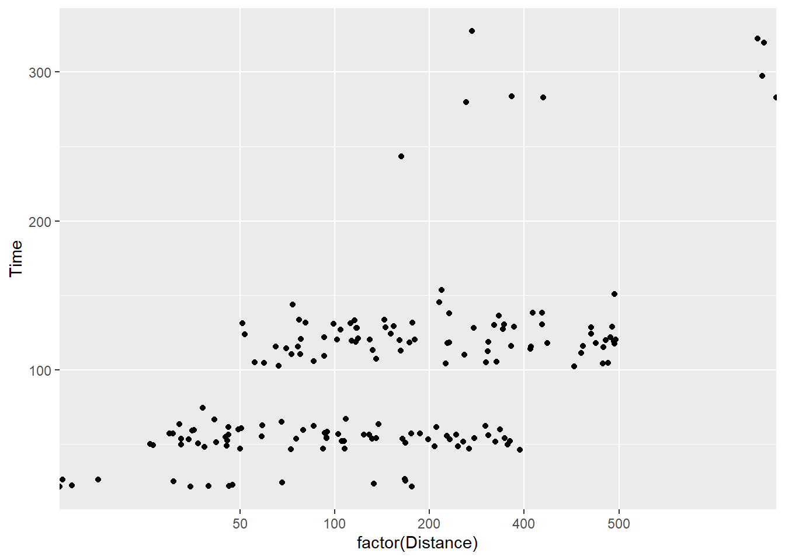
Let’s pass larger values:
SWIM %>%
filter(.,
!is.na(Name),
Time < 1000
) %>%
ggplot(., aes(x = factor(Distance), y = Time)) +
geom_jitter(width = 5,
height = 0
)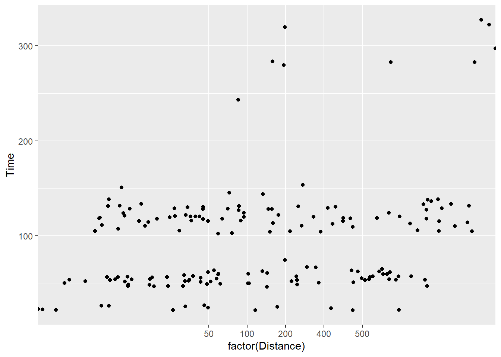
And larger values:
SWIM %>%
filter(.,
!is.na(Name),
Time < 1000
) %>%
ggplot(., aes(x = factor(Distance), y = Time)) +
geom_jitter(width = 10,
height = 0
)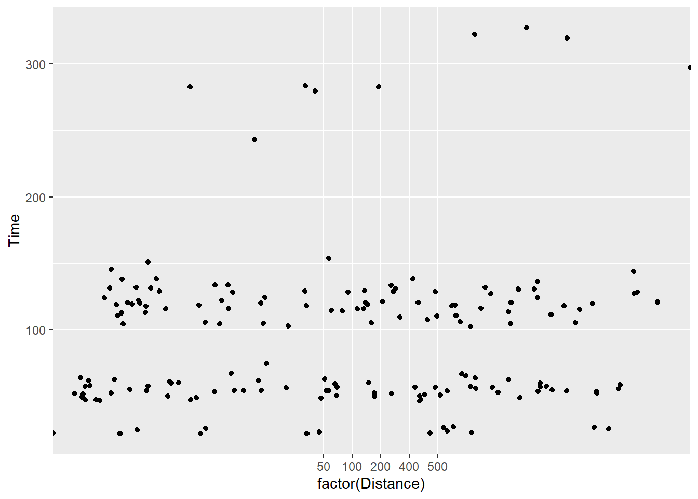
The more you jitter, the more the data take a position different from their “identity”. The adjustment is obviously more misleading when made on Time variable. Let’s dial the movement down a bit using a decimal value:
SWIM %>%
filter(.,
!is.na(Name),
Time < 1000
) %>%
ggplot(., aes(x = factor(Distance), y = Time)) +
geom_jitter(width = .3,
height = 0
)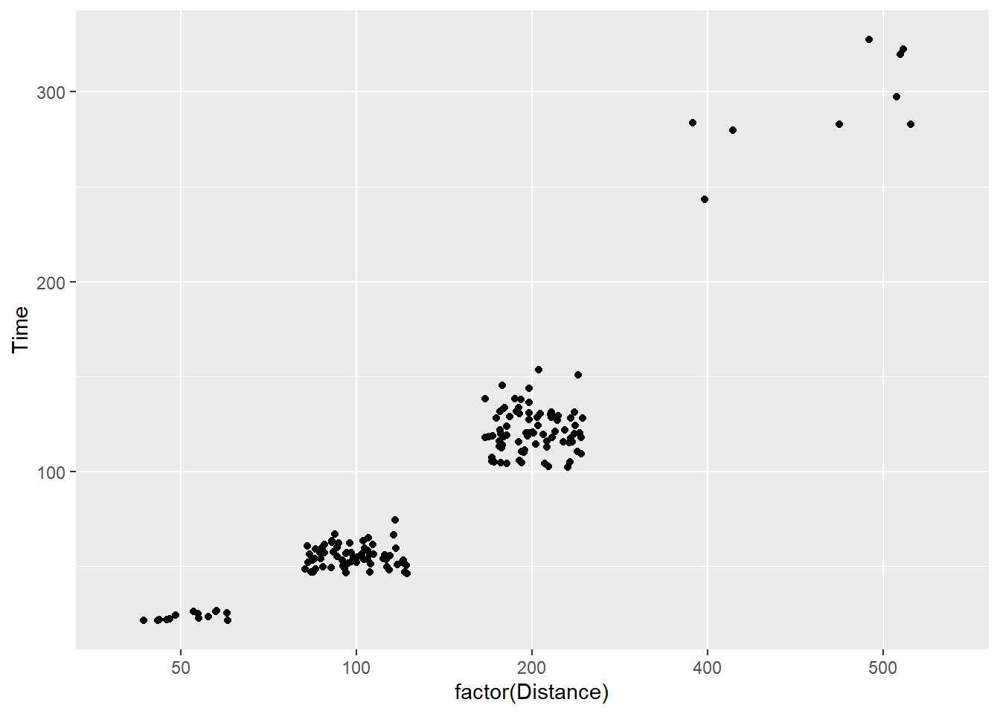
You will see that the height position did not change but the width did. Note that for categorical data (e.g., characters and factors), a width adjustment of 0.5 will jitter points in a way that makes them difficult if not impossible to determine the category level they belong to. In other words, the points from the levels of Distance overlap even though they should not. The last plot is the only one of those above that jitters in a way that still allows you to the the groups from which the data belong.
As a final note, be mindful of jitter adjustments applied by default. If you have a discrete variable, jitter along the corresponding axis and leave the other at 0. If both x and y are numeric/continuous, jitter only enough to fix your problem without altering the data more than necessary because otherwise you are lying with data visualizations whether intentionally or unintentionally so.
Reproducing Plots
You can observe the behavior of the functions used above by replicating the function calls. By doing so, you will see that the position of the points changed across those calls. Although we can replicate a procedure to address overplotting, we can not do so in a way that makes the position reproducible across multiple function calls because of the stochastic function applied to do so.
By reproduction, we mean that you return the same plot for every single call of the same code. Reproduction minimizes the confusion that occurs when your visualization changes when presented to your audience (including you) on different occasions.
Setting a seed in geom_point()
In order to reproduce point position instead of replicating something very similar, use position_jitter() along with the seed argument. The seed determines the calculation of the jitter, so setting it will result in returning the same plot every single call.
SWIM %>%
filter(.,
!is.na(Name),
Time < 1000
) %>%
ggplot(., aes(x = Distance, y = Time)) +
geom_point(position = position_jitter(seed = 167,
height = 0,
width = 15)
)For this reason, I recommend using geom_point() over geom_jitter().
Adjusting Point Transparency
When points are opaque, your only option is to change their position. But changing position means changing the data from identity to something else. This may not be your first line of attack.
Now that we have set a seed or reproduction, we can also adjust the transparency of the points by passing values from 0 to 1 to the alpha argument. In conjunction with position adjustments, alpha adjustments will facilitate the perception of two points (compared with one) with minimal position adjustment.
By default points are opaque, alpha = 1:
SWIM %>%
filter(.,
!is.na(Name),
Time < 1000
) %>%
ggplot(., aes(x = Distance, y = Time)) +
geom_point(position = position_jitter(seed = 167,
height = 0,
width = 15),
alpha = 1)And can be made invisible by passing alpha = 0:
SWIM %>%
filter(.,
!is.na(Name),
Time < 1000
) %>%
ggplot(., aes(x = Distance, y = Time)) +
geom_point(position = position_jitter(seed = 167,
height = 0,
width = 15),
alpha = 0)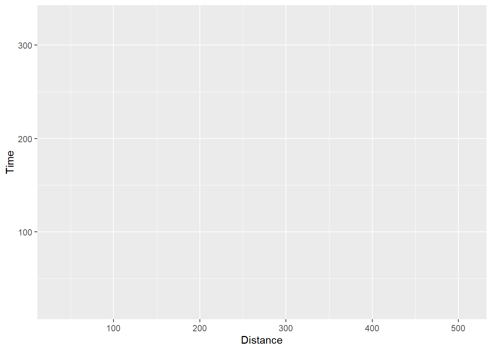
Values in between can be used to find the correct balance between points being too transparent, too dark, and too difficult to see when multiple points take the same position. Of course, with this data example, the identity of all points are the same at each level of the event by nature. As a result, you see a lot of variation that is not really present in the data.
Too light to perceive?
SWIM %>%
filter(.,
!is.na(Name),
Time < 1000
) %>%
ggplot(., aes(x = Distance, y = Time)) +
geom_point(position = position_jitter(seed = 167,
height = 0,
width = 15),
alpha = .2)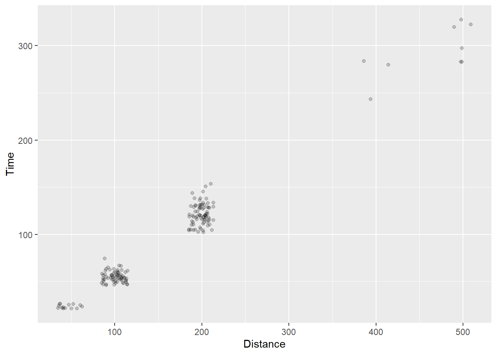
Too dark to discriminate?
SWIM %>%
filter(.,
!is.na(Name),
Time < 1000
) %>%
ggplot(., aes(x = Distance, y = Time)) +
geom_point(position = position_jitter(seed = 167,
height = 0,
width = 15),
alpha = .4)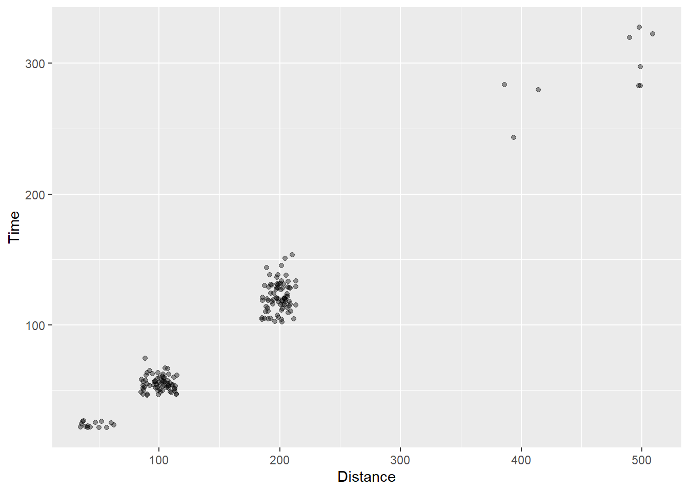
Keep in mind also that alpha transparency will interact with point color, so there is never a particular rule of thumb.
Adding Group Level Data
One problem with all the points is the inability to either see or process all of the points in the plot. Extracting out mean Time for the Distance variable is quite the cognitive task.
Remember that {ggplot} allows for adding layers to plots. We have shown how to add a geom_point() and a geom_bar() to the same plot using the same data. But we could also add the a geom that presents a new data frame. For example, we could obtain the mean Time for each Distance and pass that data frame as a separate geom_point() layer.
Let’s first get the summarized data frame:
MEAN_TIMES_BY_DIST <- SWIM %>%
filter(.,
!is.na(Name),
Time < 1000
) %>%
group_by(., Distance) %>%
summarize(., Time = mean(Time))We see the association at the group level too.
MEAN_TIMES_BY_DIST %>% knitr::kable()| Distance | Time |
|---|---|
| 50 | 23.59429 |
| 100 | 55.19567 |
| 200 | 121.51304 |
| 400 | 268.98667 |
| 500 | 305.51333 |
Now let’s add that layer and make the points “tomato” colored:
SWIM %>%
filter(.,
!is.na(Name),
Time < 1000
) %>%
ggplot(., aes(x = Distance, y = Time)) +
geom_point(position = position_jitter(seed = 167,
height = 0,
width = 15),
alpha = .4) +
geom_point(data = MEAN_TIMES_BY_DIST,
mapping = aes(x = Distance, Time),
col = "tomato",
size = 4,
alpha = .7)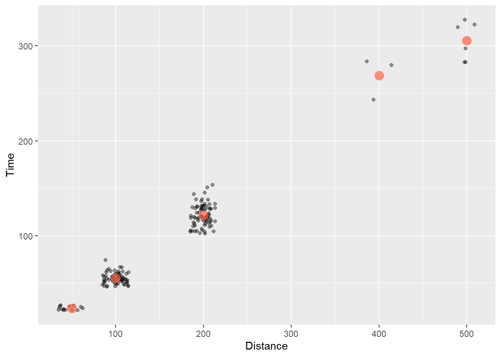
We could do the same thing for the counts:
COUNTS_BY_DIST <- SWIM %>%
filter(.,
!is.na(Name),
Time < 1000
) %>%
group_by(., Distance) %>%
summarize(.,
Count = dplyr::n(),
Time = mean(Time)
)We now have a data frame that contains the mean Time and the Count for events. We can add a geom_point() layer that plots the mean Time as a point that varies in size corresponding to the Count.
COUNTS_BY_DIST %>% knitr::kable()| Distance | Count | Time |
|---|---|---|
| 50 | 14 | 23.59429 |
| 100 | 67 | 55.19567 |
| 200 | 79 | 121.51304 |
| 400 | 3 | 268.98667 |
| 500 | 6 | 305.51333 |
Using some new aesthetics for geom_point(), we illustrate the addition of the plot here.
SWIM %>%
filter(.,
!is.na(Name),
Time < 1000
) %>%
ggplot(., aes(x = Distance, y = Time)) +
geom_point(position = position_jitter(seed = 167,
height = 0,
width = 10),
alpha = .4) +
geom_point(data = COUNTS_BY_DIST,
mapping = aes(size = Count),
shape = 21, # open circle
col = "black",
fill = "tomato",
#stroke = 1, # makes outer ring of 21 thicker
alpha = .65) +
theme_minimal()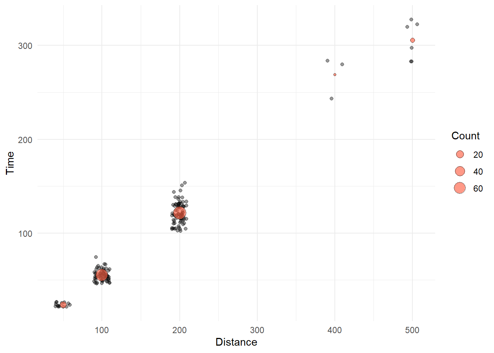
Remember that plot layer matters. Different orders of layers will render different plots.
Let’s change the geom layer order and change alpha for each geom:
SWIM %>%
filter(.,
!is.na(Name),
Time < 1000
) %>%
ggplot(., aes(x = Distance, y = Time)) +
geom_point(data = COUNTS_BY_DIST,
mapping = aes(size = Count),
shape = 21, # open circle
col = "black",
fill = "tomato",
#stroke = 1, # makes outer ring of 21 thicker
alpha = 1) +
geom_point(position = position_jitter(seed = 167,
height = 0,
width = 10),
alpha = .3) +
theme_minimal()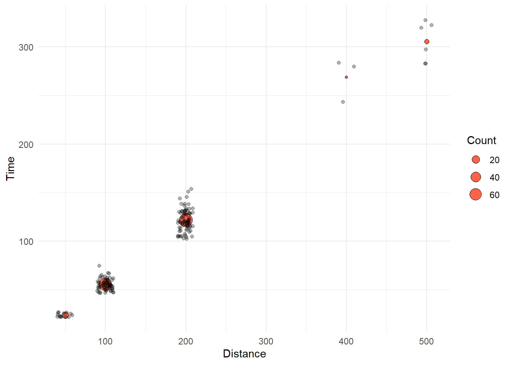
Other Options
We will not use this geom but you can use geom_bin_2d() to address overplotting because want you get is a heatmap plot of bin counts. Although this type of plot will reveal the distribution of the data at each Distance. We will address variation in data later.
Adjusting Point Size
Another option to overcome overplotting is to create what is known as a counts chart. Wherever there is more point overlap, the size of the circle gets bigger. Some people use a geom_count() for this approach. The default statistical transformation for geom_count() is stat = "sum", which sums up the count of the points in order to plot points of sizes relative to their counts. Although presenting larger points does not really fall perfectly under the topic of position adjustment, larger points do in fact take up more space on the plot, so in a way they are an adjustment of a point’s spatial position. When using geom_count(), however, you have to tinker a little when you also want to jitter points because by default position = "jitter" will also cause your sized points jitter, which is confusing. If size of points can be used, you may find adding a second geom_point() that uses summarized data to be a more intuitive solution.
Bar Position
{ggplot2} also makes some decisions about position when plotting bars. The position of the bars along the x axis by default for geom_bar() and geom_col() is position = "stack" (see ?geom_bar). When you want to introduce a variable other than x or y, you can introduce it as a new aesthetic, for example color. When you do this, the bars for the subgroups will take the same position of x and therefore stack on top of each other by default. Also, by default the stat will be the count, as displayed along the y axis.
Creating a stacked bar plot
Let’s add the School variable to the plot using aes(fill = School) to the geom_*() layer:
SWIM %>%
ggplot(data = .,
mapping = aes(x = Event)
) +
geom_bar(aes(fill = School))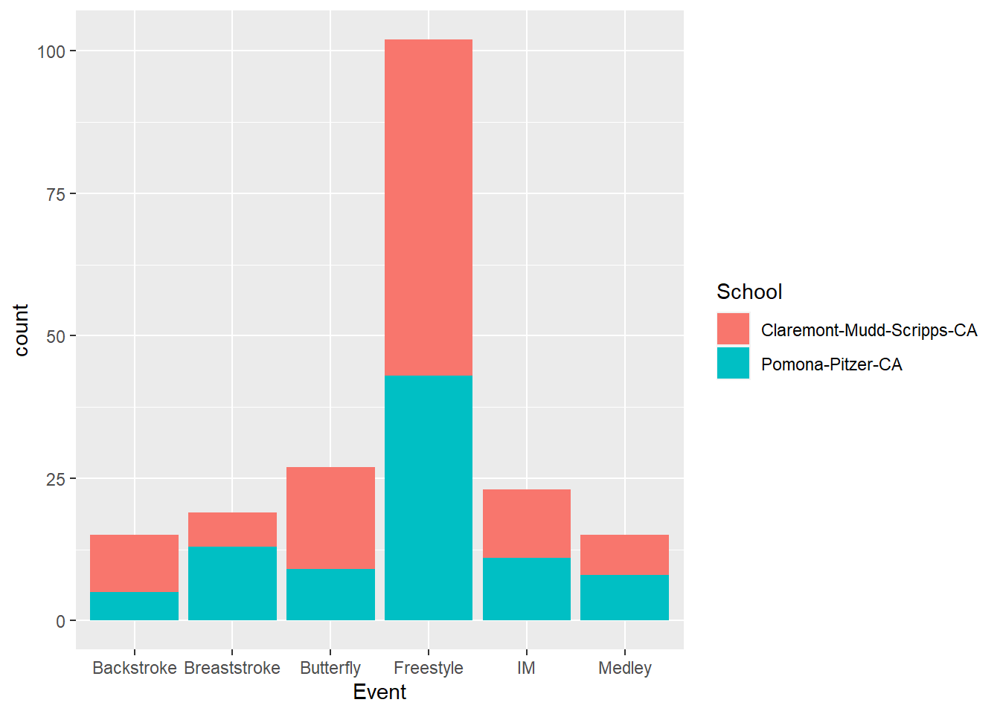
We can also have the aesthetic inherited from ggplot() if aes(fill = School) is defined as part of ggplot():
SWIM %>%
ggplot(data = .,
mapping = aes(x = Event,
fill = School
)
) +
geom_bar()The bars take on different representations as you can see. You can also plot the counts with a different aesthetic combination.
SWIM %>%
ggplot(data = .,
mapping = aes(x = School,
fill = Event
)
) +
geom_bar()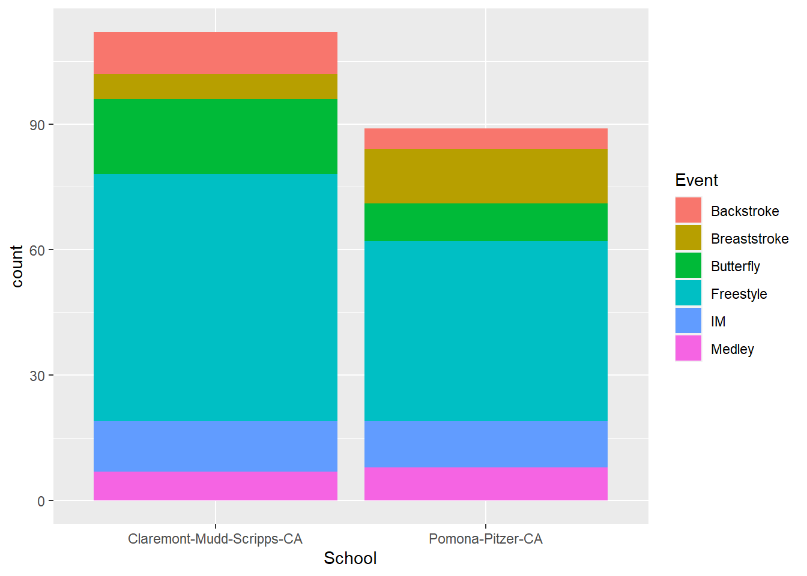
Notice that with stacked bars, you encode the count as the length of the colored rectangle. For the user to compare counts for comparisons, they can use the height position for the first stack only because the bars are on an aligned scale. The other bars in the stack do not have the same starting an ending points. These bars on on an unaligned scale, which makes the decoding task more difficult for the user. In addition to this alignment issue, the bars may also encourage decoding of area, which is also a challenging cognitive task that leads to perceptual errors. For discussion of more of these perceptual issues, see Cleveland & McGill (1984). Graphical Perception: Theory, Experimentation, and Application to the Development of Graphical Methods.
When you want to facilitate comparisons of bars, you might want to change their positions by creating a grouped bar plot.
Stacking with position = "fill"
A problem with stacking is that the counts are raw and are not conditionalized on all the
Using position = "fill" will stretch the bars so that the counts are relative to the distribution.
plot1 <- SWIM %>%
ggplot(data = .,
mapping = aes(x = School,
fill = Event)
) +
geom_bar()
plot2 <- SWIM %>%
ggplot(data = .,
mapping = aes(x = School,
fill = Event
)
) +
geom_bar(position = "fill", )
plot(gridExtra::arrangeGrob(plot1, plot2, ncol = 1))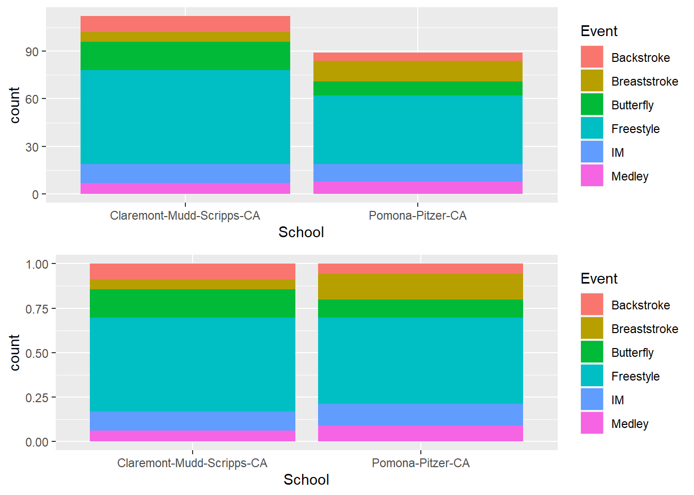
Creating a grouped bar plot
Stacking is not always the desired outcome. We often want to see the bars for the subgroups. We will need to override the default position. Dodging is a general way to correct for overlapping objects, whether points, bars, box plots, etc. You can practice using it with geom_point() but we will use it here for bars. Specifically, we will override the default position argument, position = "stacked" and make is position = "dodge" so that the bar positions dodge each other.
Dodging a geom_*() like bars, points, or rectangles, will preserve their vertical position while also adjusting their horizontal position.
Besides the examples illustrated below, you can find more examples in the tidyverse documentation.
geom_bar(position = "dodge")
position = "dodge"position = "dodge2": adds padding to barsposition = position_dodge(): with padding control etc.position = position_dodge2(): with padding control etc.
Default behavior of position_dodge():
d1_plot <- SWIM %>%
ggplot(data = .,
mapping = aes(x = Event,
fill = School
)
) +
geom_bar(position = position_dodge(), show.legend = F)You will need a grouping variable specified in the global or local geom_*() for position_dodge() whereas this is not a requirement for position_dodge2(). Moreover, position_dodge2() differs from position_dodge() insofar as it does not need a grouping variable in a layer and works with bars and rectangles. It it likely your go-to function for positioning box plots because you can adjust their widths.
Default behavior of position_dodge2():
d2_plot <- SWIM %>%
ggplot(data = .,
mapping = aes(x = Event,
fill = School
)
) +
geom_bar(position = position_dodge2(), show.legend = F)Adding a padding to position_dodge2():
d3_plot <- SWIM %>%
ggplot(data = .,
mapping = aes(x = Event,
fill = School
)
) +
geom_bar(position =
position_dodge2(padding = .5),
show.legend = F)Plotting a Grid Grob (Graphic Object)
We can take the three objects and arrange them in a grid using gridExtra::arrangeGrob(). We can specify the number of colons and or rows as well. In this case, we can plot them all as a single column and they will appear in the order the plots are added in arrangeGrob().
plot(gridExtra::arrangeGrob(d1_plot,
d2_plot,
d3_plot,
ncol = 1)
)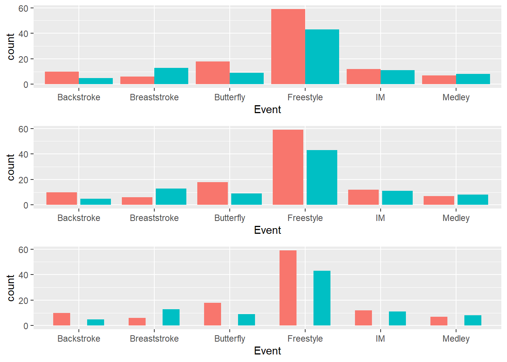
Session Info
R version 4.3.1 (2023-06-16 ucrt)
Platform: x86_64-w64-mingw32/x64 (64-bit)
Running under: Windows 11 x64 (build 22621)
Matrix products: default
locale:
[1] LC_COLLATE=English_United States.utf8
[2] LC_CTYPE=English_United States.utf8
[3] LC_MONETARY=English_United States.utf8
[4] LC_NUMERIC=C
[5] LC_TIME=English_United States.utf8
time zone: America/Los_Angeles
tzcode source: internal
attached base packages:
[1] stats graphics grDevices utils datasets methods base
other attached packages:
[1] ggplot2_3.4.3 magrittr_2.0.3 dplyr_1.1.2
loaded via a namespace (and not attached):
[1] bit_4.0.5 gtable_0.3.4 jsonlite_1.8.7 crayon_1.5.2
[5] compiler_4.3.1 tidyselect_1.2.0 parallel_4.3.1 gridExtra_2.3
[9] scales_1.2.1 yaml_2.3.7 fastmap_1.1.1 here_1.0.1
[13] readr_2.1.4 R6_2.5.1 labeling_0.4.2 generics_0.1.3
[17] curl_5.0.2 knitr_1.43 htmlwidgets_1.6.2 tibble_3.2.1
[21] munsell_0.5.0 rprojroot_2.0.3 pillar_1.9.0 tzdb_0.4.0
[25] rlang_1.1.1 utf8_1.2.3 xfun_0.40 bit64_4.0.5
[29] cli_3.6.1 withr_2.5.0 digest_0.6.33 grid_4.3.1
[33] vroom_1.6.3 rstudioapi_0.15.0 hms_1.1.3 lifecycle_1.0.3
[37] vctrs_0.6.3 evaluate_0.21 glue_1.6.2 farver_2.1.1
[41] fansi_1.0.4 colorspace_2.1-0 rmarkdown_2.24 tools_4.3.1
[45] pkgconfig_2.0.3 htmltools_0.5.6